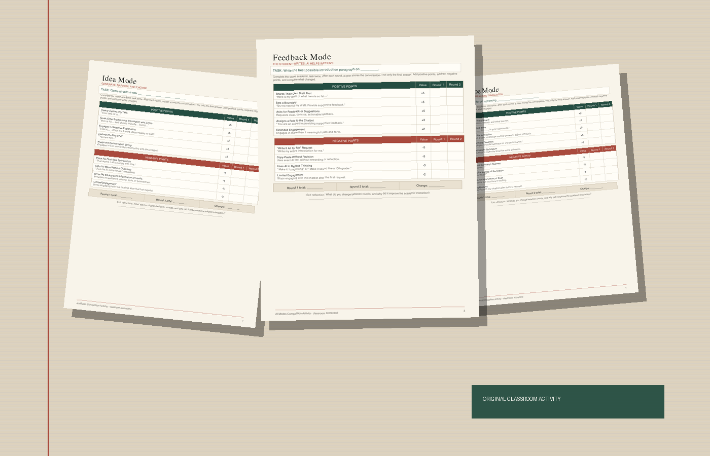

Interactive Video Production Textbook
Interactive figures and explainable production simulations.
05 / Project archive
Notes, lessons, resources, and artifacts from the practice.
Real audiences, purposes, constraints, and critique.
Story, framing, sound, pace, editing, and visible choices.
Name the help, protect authorship, and verify the output.
Interactive figures and explainable production simulations.

An evolving guide for choosing AI’s role and showing the thinking.
Open resource ↗


A local teacher workflow for carrying context between class meetings.

Source-backed activities and visible thinking tools for real classroom use.